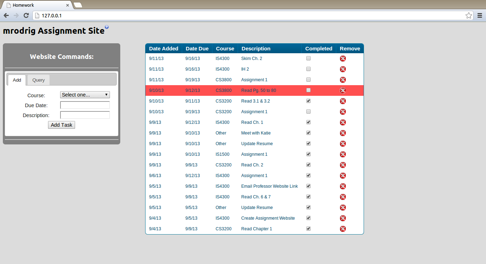

I apologize for not posting this in my original post. I only thought of this at the beginning of today's class as an addition to my initial submission. This website will have a substantial UI which will allow a user to add, update, and search through assignments that are posted to the site. Currently, I have this idea implemented with an acceptable UI that allows me to complete the functionality that I desired to keep track of various items. Prior to developing this website, I used to maintain a text file on my laptop's desktop that contained all of the assignments and/or tasks that I needed to complete for my classes along with a date they were due. After I learned a substantial amount about Web Development during my past Co-Op where I developed and maintained 4 websites that performed various tasks, I knew that this would be a superior way to help manage my time.
Although I currently have just one main screen with tabs that allow for users to add and query for assignments, I would like to add multiple new features. I have the back-end support for updating assignments already coded, but have not figured out a good implementation to allow for updating of assignments. During this semester, I would like to explore this aspect of the UI and add other useful abilities. One such feature is the ability to allow the user to re-order the position the assignments are displayed on the screen and save this new order so that all subsequent visits would automatically demonstrate this new listing. In order to implement this, I would first explore the jQuery library for a 'Draggable' item, determine how to read the order and then report it back to the back-end PHP scripts to save it.
I am also curious to see whether the current order of the columns in the task table is effective or whether a different order would be better. For example, would having the Description, Course, Date Added, and Date Due be better than my current design? I believe that this class would be an excellent way to explore this alternative especially since it is a interface design choice that can only be determined by testing it with users.
The ability to create statistical aids such as pie-charts that demonstrate to the user the categories of their tasks would also benefit some users. This would allow for more efficient time management and suggest that for categories (or in my case, classes) that have more tasks assigned, should have more time devoted to on a weekly basis. In conclusion, I believe this is probably my best option for a semester project because it allows me to focus on the one thing that I have not really devoted a lot of time to, the UI.
Images of my current implementation:
